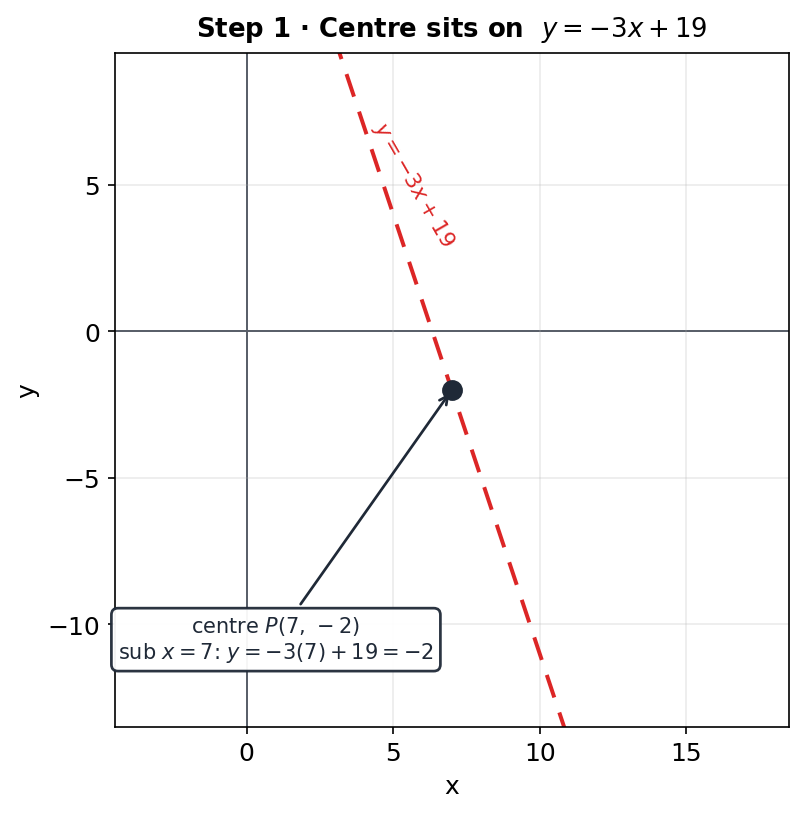
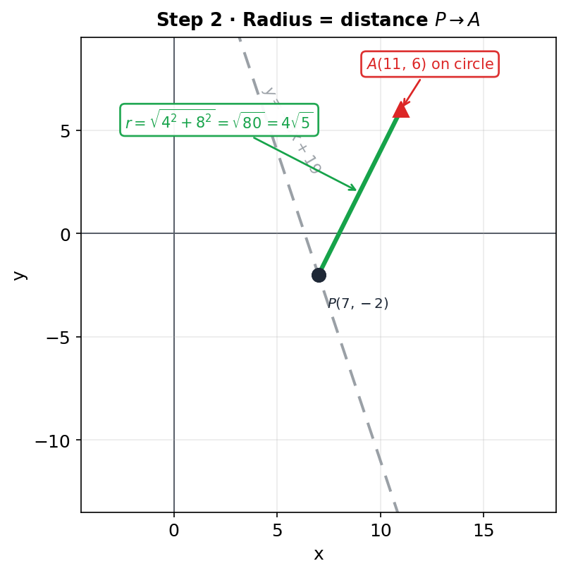
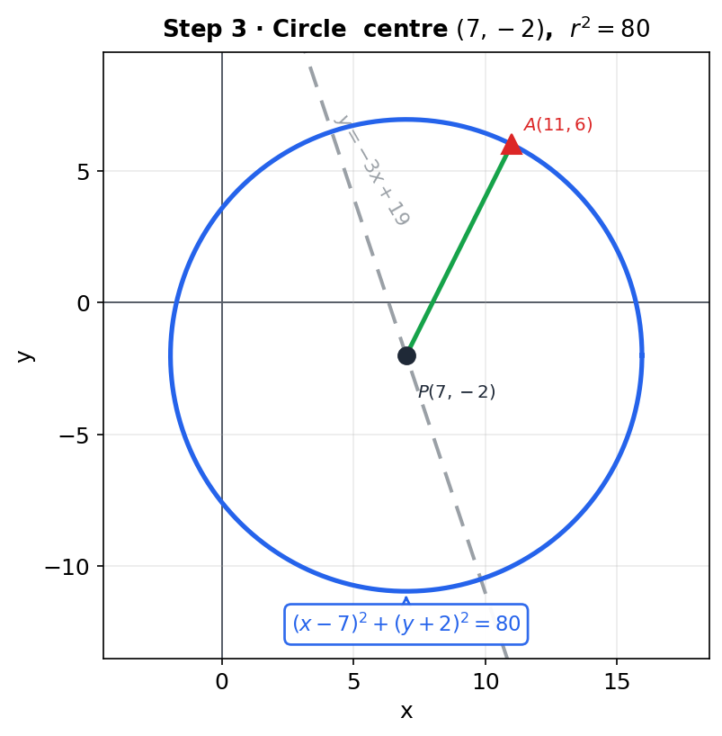

The centre of a circle lies on the line $y = -3x + 19$. The centre is the point $P(7,\, k)$ and the point $A(11,\, 6)$ lies on the circle.
Find the value of $k$ and the equation of the circle.
[5 marks]



Strategy. The centre lies on the line $y = -3x + 19$. Given the $x$-coordinate is $7$, substitute to find $k$.
Substitute $x = 7$
$$k = -3(7) + 19 = -21 + 19 = -2.$$Centre $= (7,\, -2)$.
Strategy. The radius is the distance from the centre $(7,-2)$ to the point $A(11, 6)$ on the circle: $r = \sqrt{(\Delta x)^{2} + (\Delta y)^{2}}$.
Distance formula
$$r = \sqrt{(11 - 7)^{2} + \bigl(6 - (-2)\bigr)^{2}} = \sqrt{4^{2} + 8^{2}} = \sqrt{16 + 64} = \sqrt{80}.$$Simplify surd
$$\sqrt{80} = \sqrt{16 \cdot 5} = 4\sqrt{5}.$$Sense check. $\sqrt{80} \approx 8.94$; the point $(11, 6)$ is $\sqrt{16+64} \approx 8.94$ from $(7,-2)$ ✓.
Strategy. Circle with centre $(a, b)$ and radius $r$: $(x-a)^{2} + (y-b)^{2} = r^{2}$. Use $r^{2} = 80$ (no need to square $4\sqrt{5}$ separately).
Write equation
$$\boxed{(x - 7)^{2} + (y + 2)^{2} = 80}.$$